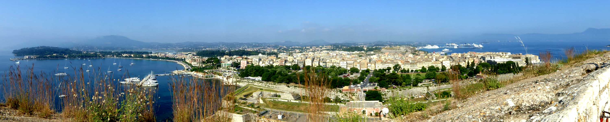
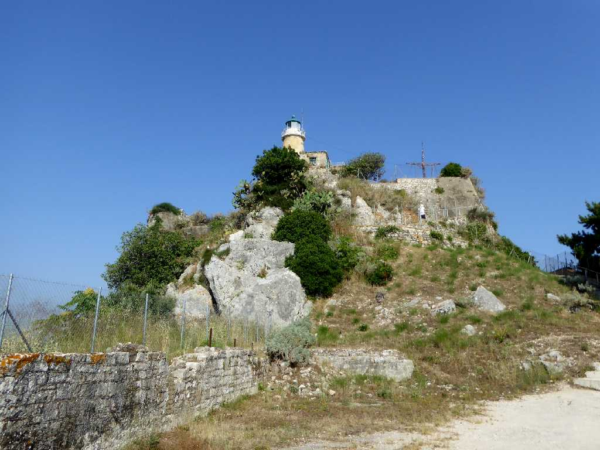
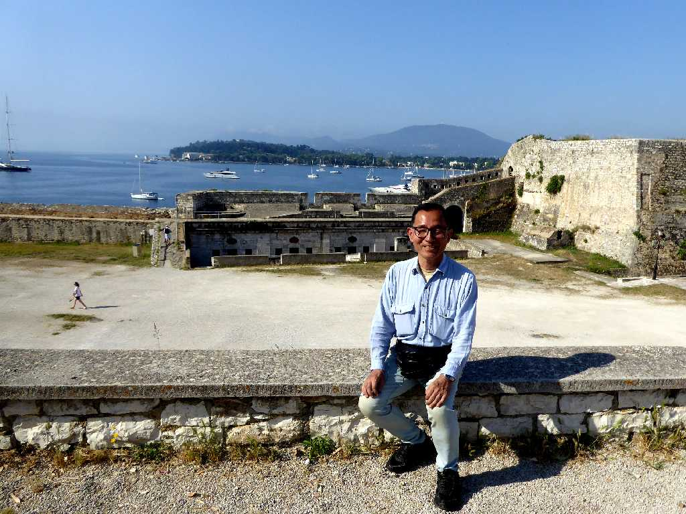
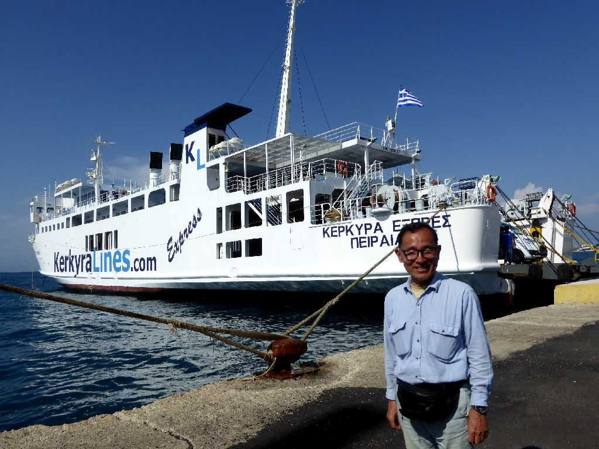
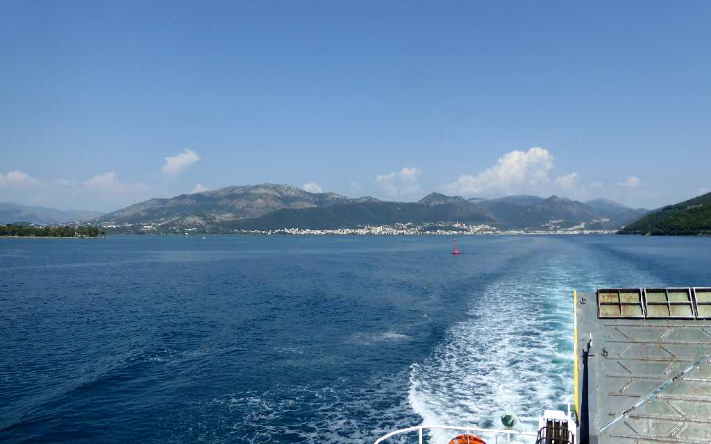

Old Town Corfu
ギリシャ人が住みたい島一番人気となったコルフ島旧市街を旧要塞より望む

Old Fortress
６世紀に旧市街の先端にある岬に創られた旧要塞

June 12 2018 Old Fortress

June 11 2018 Port Corfu (Kérkyra)
イグメニツァからフェリーでコルフ島(ケルキラ島)に上陸

Albania
２年前にバルカン周遊でアルバニア側から望んだコルフ島に向かうフェリーから逆にアルバニアを望む Ksamil(アルバニアからコルフ島を望む)